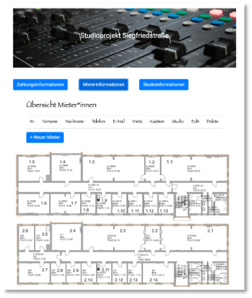
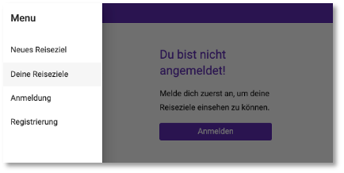

Web-Technologien¶
Herzlich willkommen zur WebTech-Veranstaltung im Wintersemester 2021/22!
Grober Inhalt¶
In dieser Veranstaltung lernen Sie, was das World Wide Web ist und wie man eigene Webseiten und -anwendungen realisiert. Sie lernen die Protokolle und Sprachen http, HTML, CSSund JavaScript kennen und machen sich mit Angular, Node.js und REST vertraut.
Nachfolgend der vorläufige Wochenplan (wird eventuell angepasst).
| Woche | Themen (Vorlesung) | Übung | Aufgabe (Stand) | Abgabe Übung bis | |
|---|---|---|---|---|---|
| 1. | 11.-15.10.2021 | Einführung und Organisatorisches | Übung 0 | - | - |
| 2. | 18.-22.10.2021 | HTML | Übung 1 | Idee | 25.10.2021 |
| 3. | 25.-29.10.2021 | CSS (Eigenschaften und Selektoren) | Übung 2 | - | 01.11.2021 |
| 4. | 01.-05.11.2021 | CSS (Layout) | Übung 3 | Konzept | 08.11.2021 |
| 5. | 08.-12.11.2021 | RWD (responsive Webdesign) | Übung 4 | - | 15.11.2021 |
| 6. | 15.-19.11.2021 | JavaScript (DOM) | Übung 5 | Datenmodell | 22.11.2021 |
| 7. | 22.-26.11.2021 | Angular (Einführung und Komponenten) | Übung 6 | Schnittstelle | 29.11.2021 |
| 8. | 29.-03.12.2021 | Angular (Bindings und Direktiven) + JSON | Übung 7 | Frontend (c+r) | 06.12.2021 |
| 9. | 06.-10.12.2021 | Angular (Routing und Services) | Übung 8 | Frontend (u+d) | 13.12.2021 |
| 10. | 13.-17.12.2021 | Node.js + Express (REST-Server + MongoDB) | Übung 9 | Frontend fertig | 20.12.2021 |
| 11. | 20.-24.12.2021 | Angular (Anbindung ans Backend) | Übung 10 | Backend ( c ) | 10.01.2022 |
| 12. | 03.-07.01.2022 | Nutzerverwaltung und Material | - | Backend (r + u) | 17.01.2022 |
| 13. | 10.-14.01.2022 | [Dateiupload + Drag&Drop] | - | Backend (d + fertig) | 24.01.2022 |
| 14. | 17.-21.01.2022 | Wiederholung | - | fertig stellen | 31.01.2022 |
| 15. | 24.-28.01.2021 | - | Fragen | - | - |
| 16. | 31.-03.02.2022 | - | Fragen | - | |
| 17. | 07.-11.02.2021 | - | Fragen | Abgabe 1.PZ 8.2.2022 oder 22.2.2022 | |
| Abgabe 2.PZ 29.3.2022 | - |
Organisatorisches¶
Zur erfolgreichen Durchführung der Veranstaltung müssen Sie die Übungen lösen und zu den jeweiligen Fristen per Git auf einen Server (GitHub oder GitLab) laden. Am Ende des Semesters ist eine Aufgabe abzugeben. Diese Aufgabe wird bewertet. Die Bewertung entspricht dann der Modulnote.
Hier sind die Übungen beschrieben, die Sie in jeder Woche ausführen sollen. Damit Sie dies erfolgreich erledigen können, ist jeweils angegeben, welche Themen Sie dafür durcharbeiten müssen. Das Durcharbeiten der jeweiligen Themen entspricht jeweils einer Vorlesung. Diese wird also selbständig durchgeführt.
Für die Kommunikation untereinander verwenden wir Slack. Dort können Sie alle inhaltlichen und organisatorischen Fragen stellen. Ich fände es gut, wenn ich dort möglichst wenig Fragen - zumindest die inhaltlichen - beantworten müsste, sondern eine Art internes Diskussionsforum entsteht. Es ist sehr gewünscht, dort Fragen zu stellen und noch mehr gewünscht, diese von Ihnen dort beantwortet zu sehen. Damit wäre allen geholfen und ich kann besser erkennen, wo noch Nachhol- bzw. Erläuterungsbedarf bei den meisten besteht.
Semesteraufgabe¶
Am Ende des Kurses geben Sie eine Webanwendung ab. Diese wird bewertet und bildet die Modulnote für "WebTech" (es gibt also keine Klausur o.ä.). Überlegen Sie sich früh, was Sie implementieren wollen. Ihrer Kreativität sind keine Grenzen gesetzt. Es können 2 Studentinnen gemeinsam ein Projekt durchführen und abgeben. Sie erhalten dann (höchstwahrscheinlich) die gleiche Note. Es muss an den Commits erkennbar sein, welchen Anteil am Ergebnis jede der beiden Studentinnen hatte.
Sobald Sie mit Ihrem Semesterprojekt fertig sind, geben Sie mir bitte Bescheid! Wir vereinbaren dann einen Online-Gesprächstermin. Sie müssen auch im 2.PZ nicht bis zum 1.4. warten - im Gegenteil, wenn wir die Gespräche in den März legen können, um so besser.
Mindestanforderungen
Folgende Anforderungen werden an Ihr Projekt gestellt:
- das Frontend soll mit Angular entwickelt werden,
- das Backend mit Node.js,
- es soll eine Datenbank (MySQL oder PostgreSQL oder MariaDB oder MongoDB oder SQLite oder ...) verwendet werden,
- es soll CRUD implementiert sein, d.h. Sie benötigen
- eine Komponente zur Erstellung und Speicherung eines Datenbankeintrages (Create),
- eine Komponente zur Änderung eines Datenbankeintrages (Update),
- eine Komponente zur Anzeige aller Datenbankeinträge (Read),
- eine Komponente zum Löschen eines Datenbankeintrages (Delete).
- wenn Sie die Anwendung alleine umsetzen, dann genügen 3 der 4 CRUD-Funktionalitäten
- wenn Sie die Anwendung zu zweit entwickeln, dann
- sollen alle 4 CRUD-Funktionalitäten umgesetzt werden und
- Login (Username + Passwort) und
- ich schaue mir die Commit-Hiostorie im Git genauer an, um sicherzugehen, dass beide Studentinnen gleich viel an der Anwendung mitentwickelt haben
Datenbankeinträge können Bücher, CDs, ToDos, Einkaufslisten, Vorlesungen, Kühlschrankinhalte usw. sein - wie gesagt, Ihrer Kreativität sind keine Grenzen gesetzt.
Die Anwendung soll in einem Git-Dienst (GitHub, GitLab, ...) verfügbar sein.
Verwenden Sie ein CSS-Framework, wie z.B. Materialize, Bootstrap o.ä.! Ihre Anwendung soll "modern" aussehen und responsive sein.
Erstellen Sie eine informative (ausführliche) README-Datei (README.md). Diese Datei sollte beinhalten:
- Eine Beschreibung Ihrer Anwendung. Am besten mit Screenshots, so dass sie Ihren Kommilitoninnen aus den nächsten Jahren hilft, ein Verständnis dafür zu entwickeln, was mögliche Semesteraufgaben sein können.
- Eine Anleitung zur Installation Ihrer Anwendung.
Super wäre es, wenn Sie die Datenbank, die Sie verwenden, per Skript vorausfüllen, d.h. es wäre schön, wenn zum testen der Anwendung nur das Frontend und das Backend gestartet werden müssten und alles andere automatisch passieren würde. Super wäre es auch, wenn Sie Ihre Anwendung deployen würden.
Nach Abgabe vereinbaren wir ein Online-Meeting, in dem Sie mir Ihre Anwendung nochmal zeigen können und ich Ihnen Fragen zu Ihrem Code stellen werde. Ist keine Prüfung, sondern eher ein fachliches Gespräch.
Abgabe- und Gesprächstermine¶
Die Lösung für die Semesteraufgabe pushen Sie in Ihr Respository. In einem Gespräch führen Sie die Lösung vor und wir unterhalten uns über Ihre Lösung. Dafür stehen verschiedene Termine zur Verfügung.
-
- Prüfungszeitraum: 8.2. Abgabe und 9.2. Gespräch oder 22.2. Abgabe und 23.2. Gespräch
-
- Püfungszeitraum: 29.3. Abgabe und 30.3. Gespräch
Bitte tragen Sie sich in Moodle in den von Ihnen gewünschten Gesprächstermin ein! Wenn Sie im 1.PZ abgeben, tragen Sie sich im LSF zum ersten PZ zur Prüfung ein, ansonsten im 2.PZ.
Einige Beispiele¶
Mieter- und Zahlungsinformationen verwalten¶
- 
ToDo-Liste¶


Dog-O-Mat¶

Reiseplaner¶

- 